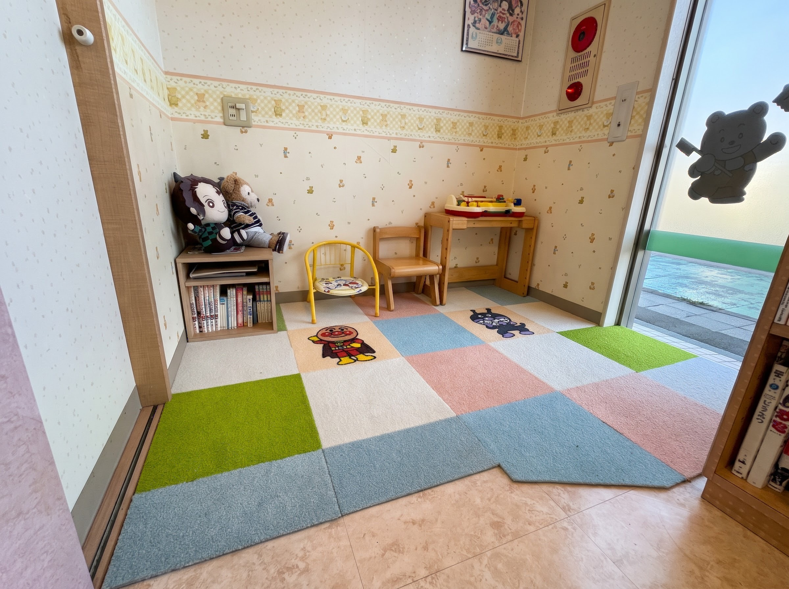
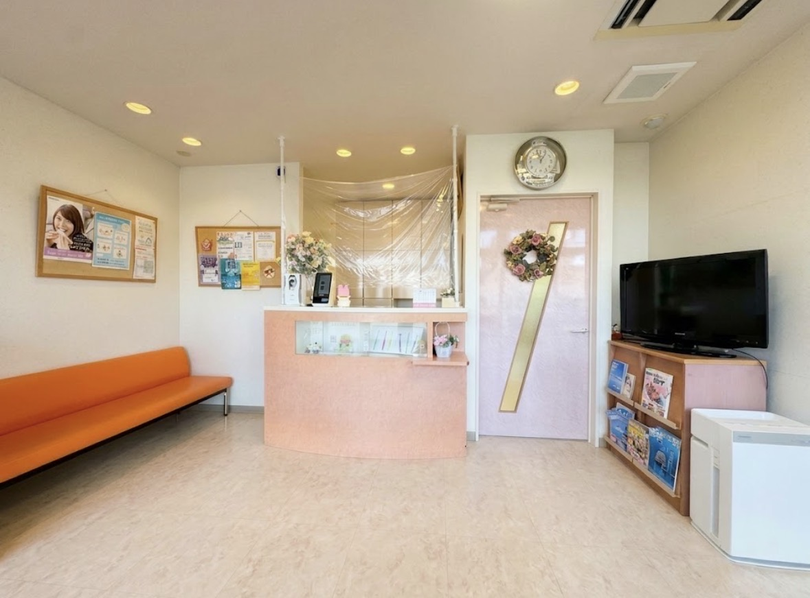
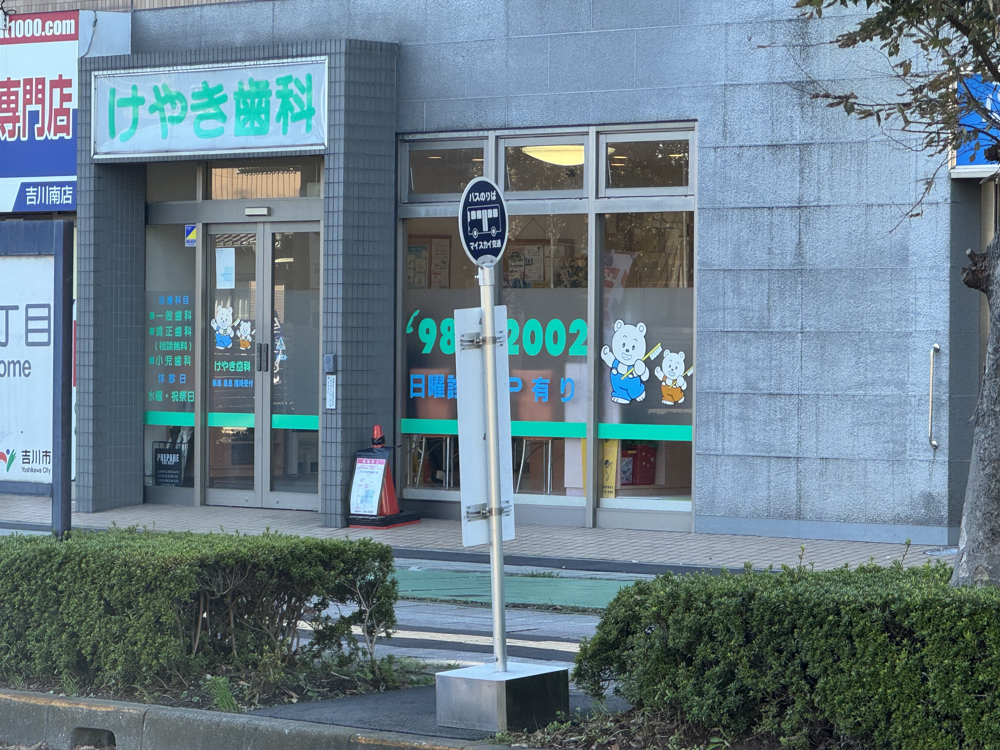

吉川駅南口から歩いて3分
地域の皆さまのお口の健康を、
おかげさまで開院25周年目。
地域の皆さまのお口の健康を、
やさしく丁寧にお守りします。
けやき歯科では、夫婦で力を合わせて日々の診療にあたり、できるだけ痛みの少ない治療と、丁寧な分かりやすい事前説明を心がけています。お子様からご年配の方まで、安心して通える歯医者を目指しています。
おかげさまで開院25周年目。
けやき歯科では、夫婦で力を合わせて日々の診療にあたり、できるだけ痛みの少ない治療と、丁寧な分かりやすい事前説明を心がけています。お子様からご年配の方まで、安心して通える歯医者を目指しています。
表面麻酔や電動麻酔器を使用し、治療時の不安や痛みが少なくなるような工夫をしています。苦手な方は遠慮なくおっしゃってください。
平日は19:30まで、土曜・日曜も診療しております。医院の目の前が「木売公園入口」バス停で、お車の方のために無料駐車場（2台）もご用意しています（満車の場合はご連絡ください）。
矯正歯科の認定医（女医）が在籍しており、専門的な視点から歯並びや噛み合わせの治療・ご相談に対応しています。お気軽にお声がけください。
むし歯の治療や歯の痛み、詰め物・被せ物が取れたといった日常的なお口のトラブルに幅広く対応いたします。
見た目の美しさだけでなく、しっかりと噛める正しい噛み合わせを目指した矯正治療を行います。
お子様のペースに合わせ、まずは歯医者さんの雰囲気に慣れることから優しく進めていきます。フッ素塗布やむし歯予防もお任せください。
歯のクリーニングや定期検診を通して、むし歯や歯周病を未然に防ぎ、ご自身の歯を長く保てるようサポートします。
しっかり噛めて痛みの少ない入れ歯の作製や、現在お使いの入れ歯の調整・修理を行います。違和感のある方もご相談ください。

院内には、お子様が楽しく遊べるキッズスペースや、絵本・児童書・マンガをご用意しております。待ち時間も退屈せずにお過ごしいただけますので、小さなお子様連れの親御様もどうぞ安心してご来院ください。

ご来院いただきましたら、まずは受付へお声がけください。初めての場所でもリラックスしてお過ごしいただけるよう、スタッフ一同、笑顔で丁寧な対応を心がけております。急な痛みなどがある際も遠慮なくお伝えください。
お電話（048-981-2002）にてご予約のうえ、マイナ保険証または資格確認書をお持ちになってご来院ください。
いつからどのような症状があるか、治療に対するご希望やご不安などを丁寧にお伺いします。
状態を確認するための検査を行い、現在の状態と治療方針を分かりやすくお話しします。
ご納得いただいてから治療を進めます。治療後も健康な歯を保つための定期検診をご案内します。
| 診療時間 | 月 | 火 | 水 | 木 | 金 | 土 | 日 | 祝 |
|---|---|---|---|---|---|---|---|---|
| 09:30〜13:00 | ● | ● | 休 | ● | ● | ● | ▲ | 休 |
| 14:30〜19:30 | ● | ● | 休 | ● | ● | ▲ | ー | 休 |
▲ 土曜・日曜の診療時間
休診日：水曜日・祝日
| 医院名 | けやき歯科 |
|---|---|
| 所在地 | 〒342-0045 埼玉県吉川市木売2-19-13 BBパレス1F |
| 電話番号 | 048-981-2002 |
| 診療科目 | 一般歯科・矯正歯科・小児歯科 |
| アクセス | JR武蔵野線「吉川駅」南口より徒歩3分 「木売公園入口」バス停の目の前です |
| 駐車場 | 無料駐車場2台完備 （満車の場合はご連絡ください） |

マイスカイ交通［M70］「新三郷駅西口〜吉川警察署入口経由〜吉川駅南口線」をご利用いただくと、当院のすぐ目の前にある「木売公園入口」バス停で降りて徒歩0分でご来院いただけます。
駐車場や診療時間、ご予約・初診の持ち物、お子様連れの通院、治療に関する疑問を分かりやすくまとめています。
日々の歯磨きや予防ケア、お子様の歯の健康づくりなど、お口の健康維持に役立つコラムを掲載しています。